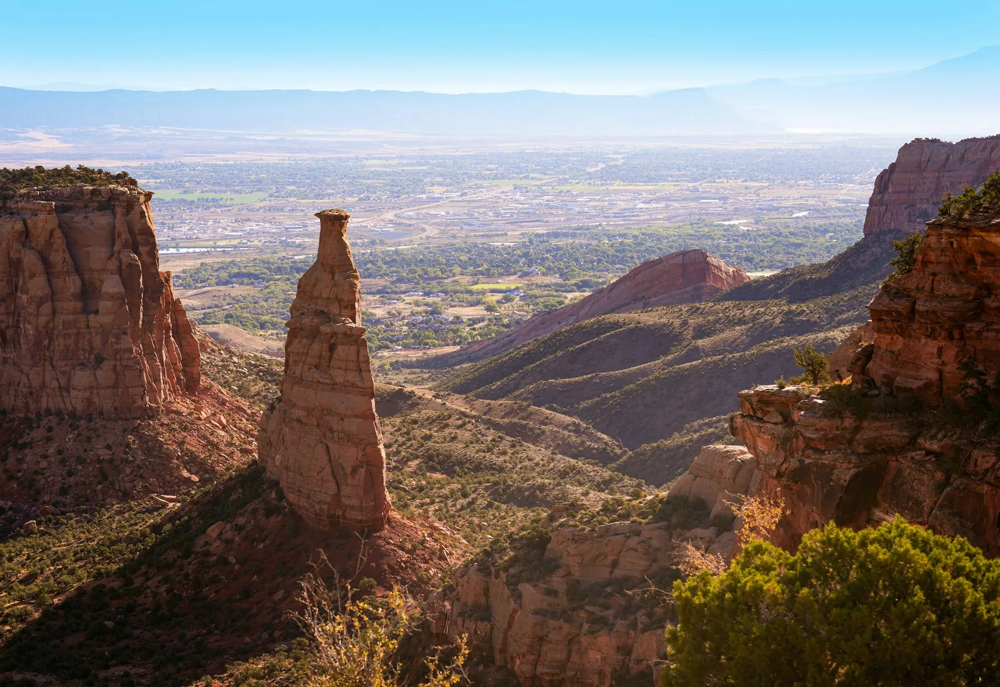

Home/Communities/Grand Junction
Living in Grand Junction, CO
The largest market on the Western Slope and the only one here with a hospital system, an airport and a university. Prices run below the Roaring Fork by a wide margin, which is why people priced out of Glenwood keep looking west.
00 Orientation
Grand Junction is a city, and it behaves like one
This is the largest market on the Western Slope and the only one with a hospital system, a regional airport and a university inside it. That gives it a broader employment base than the Roaring Fork and, with it, more inventory, more price range and a market that moves on different signals. It is also a different county and outside the Aspen-Glenwood MLS territory, so I work it from the wider feed. If you are being priced out up valley this is where the money goes furthest, but it is a city rather than a small town, and that suits some people and not others.

In the valley
Downtown, the older neighbourhoods around it, and the newer subdivisions spreading north and east. This is a real city with a hospital system, an airport and a university, and it prices like one.

The Redlands and out toward the Monument
Up against the red rock on the west side. Bigger lots, bigger views, and a different set of questions about water, access and slope.
01 Before you offer
What I would check for you
Grand Junction is a different county, a different MLS territory and a genuinely different economy from the corridor. I work here, and I will be straight that it is not the same valley.
Irrigation water is its own system
Much of the valley is served by irrigation companies separate from domestic water. What a property is entitled to, and what it is assessed for, both need checking.
Soils on the Redlands
Expansive soils and slope are real considerations on the west side. A structural look is worth more here than a cosmetic one.
Which water district
Domestic water in the valley comes from several different providers depending on the address. They are not interchangeable in cost or in reliability.
Association documents
A lot of the newer building is inside associations. Reserves and assessment history tell you more than the monthly dues.
Mineral rights
Severed minerals are common across Mesa County. It belongs in the title review.
How this market moves
It behaves differently from the Roaring Fork, with a broader employment base and more inventory. If you are coming from up valley, do not assume the same rules apply.
02 Day to day
Good to know
Schools
Mesa County Valley School District 51 serves Grand Junction. Boundaries change, so confirm a specific address with the district.
District 51Everyday
The largest employment base, retail and medical centre on the Western Slope, plus a regional airport. This is where the rest of the corridor drives for the things it does not have.
City of Grand JunctionThe university
Colorado Mesa University is in town, which shapes the rental market and a good deal of the downtown.
Colorado Mesa UniversityOutdoors
The Colorado and the Gunnison meet here, with the Colorado National Monument on the west side and the Grand Mesa to the east.
Mesa County
03 Kevin Atchison
If you are being priced out of the Roaring Fork, this is where the money goes furthest.
If you are being priced out of the Roaring Fork, this is where the money goes furthest on the Western Slope. It is a city rather than a small town, which suits some people and not others, and that is the honest conversation to have before you start looking.
I grew up in the Roaring Fork Valley and I work the stretch of it people can still afford. I answer my own phone, there is no team, and if a house is wrong for you I will tell you that before you drive out to it.
Talk to me about Grand JunctionMesa County and the corridor
Nearby towns I work


Come and look
Thinking about Grand Junction?
Call or text. I will tell you what your money actually buys here, and what it buys ten minutes down the road.
Get in touch